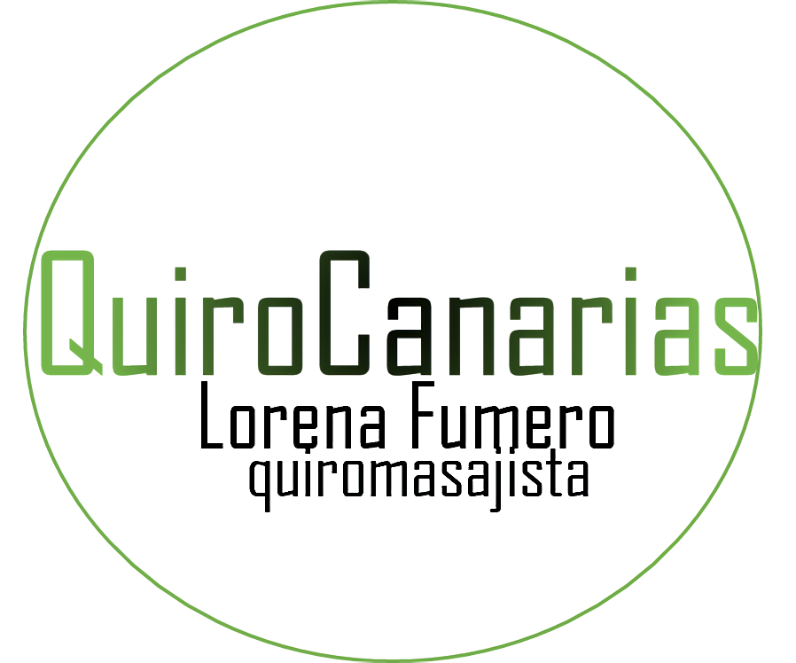

Dedicamos nuestro trabajo a facilitarle el día a día mejorando su estado de bienestar a través de terapias de quiromasaje.

Quiromasajista con conocimientos en movilizaciones, estiramientos, acupresiones, técnicas de masaje terapéutico, deportivo y relajante, herbodietética, formación especializada en fitoterapia, nutrición, dietética, homeopatía, productos dietéticos, ecológicos y complementos de la dieta.
Trabajamos a diario para ofrecerte un servicio de terapias alternativas buscando la mejor manera para lograr un estado de bienestar y confort óptimo para tu salud a través del quiromasaje
Consiste en valorar tu dolencia/molestia y ejecutar las técnicas que mejor le convenga a través de movilizaciones, estiramientos y acupresiones.
Por sólo: 19,95€
Técnicas de Masaje Relajante
+
Técnicas de Masaje Descontracturante
+
Acupresiones
Por sólo: 19,95€ - 45 min
Técnicas de Masaje descontracturante
+
Técnicas de Masaje Relajantes
Por sólo: 14,95€ - 20 min
Tratamos de que saques el máximo rendimiento posible a tu deporte,con sesiones técnicas de masaje a favor o contra fibra
Por sólo: 14,95€ - 15 min